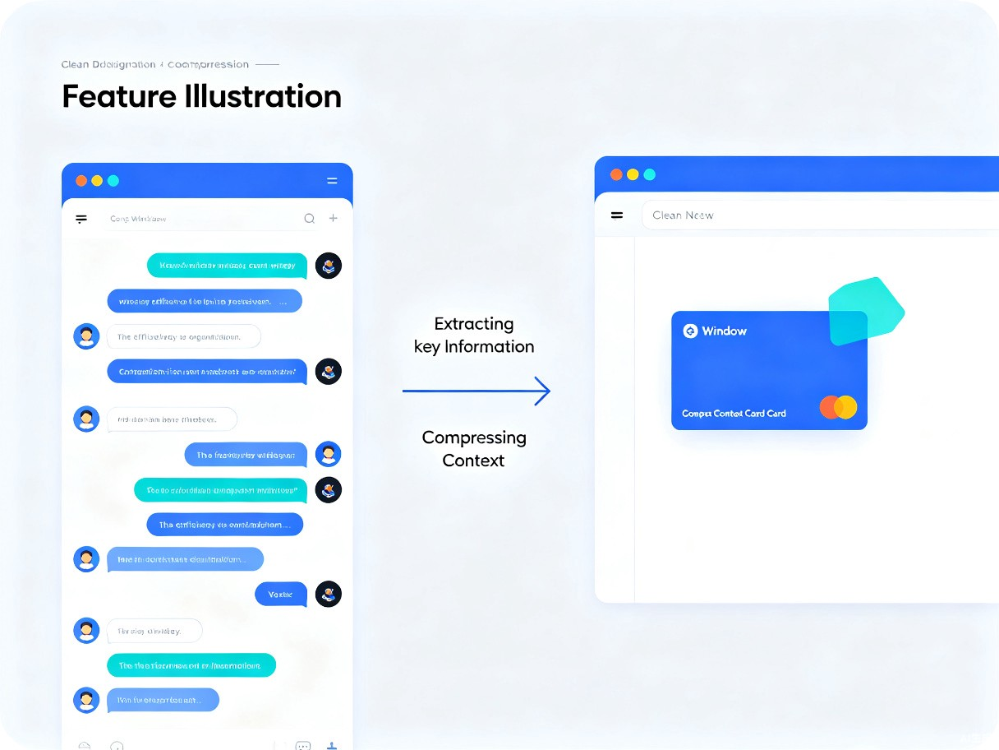

一款基于 TRAE 平台的 Skill 插件，自动提取对话精华，生成结构化文档，实现知识沉淀与上下文迁移
对话助手 — TRAE 平台上的智能知识提取工具
用户在与 AI 对话过程中产生的知识、经验和上下文难以沉淀和复用，每次对话结束后知识就流失了，无法形成可追溯的知识库。
在日常使用 AI 进行编程、学习和问题解决时，经常遇到对话内容冗长、关键信息难以提取的问题。当需要切换窗口或继续之前的任务时，重新梳理上下文耗费大量时间。因此萌生了开发一个能自动提取对话精华、生成结构化文档的工具。
一款基于 TRAE 平台的 Skill 插件，自动识别用户指令，从当前对话窗口提取关键信息，生成每日总结、经验沉淀、技术笔记、上下文压缩四种类型的文档文件。
主要面向程序员、开发者、技术学习者等在 TRAE 平台上进行编程工作的用户群体。
对话内容杂乱，关键信息淹没在大量交流中，难以快速定位
没有结构化的文档输出，重要经验和决策容易遗忘
切换窗口时需要重新描述上下文，浪费时间和 token
无法形成个人知识库，重复问题反复提问
通过自动提取和整理对话内容，用户无需手动撰写总结文档，节省大量重复劳动。上下文压缩功能使得跨窗口任务切换效率提升 80% 以上，大大降低了 token 消耗和时间成本。
该工具鼓励用户记录和沉淀知识，促进个人知识管理习惯的养成。通过结构化的经验沉淀，不仅帮助个人成长，也为团队协作提供了可共享的知识资产，推动技术社区的知识积累。
整理今日工作概览、完成事项、待跟进
记录问题、坑点、解决方案
记录架构选型、技术决策
提取关键内容，新窗口快速恢复
对话过长时会浪费大量 token，切换新对话又会丢失关键信息。上下文压缩正是解决这个痛点：生成后直接调用，在新窗口复用关键信息，无需重复分析文件，非常方便。

用户："对话助手，提取上下文"
AI：生成上下文压缩文件，包含项目状态、文件、技术点、待完成
用户：粘贴上下文文件内容
AI：快速恢复上下文，直接开始工作，无需重复分析
四种类型分别保存在独立文件夹，文件名包含时间戳，避免覆盖：
{类型}_YYYY-MM-DD_HHMMSS.md — 每次生成都是新文件，不会覆盖已有内容。
直接说以下任意语句即可触发 Skill：
可直接指定类型：